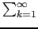
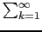

suivant: Différence de codage entre
monter: Codage des réels et
précédent: Codage des réels et
Table des matières
Index
- codage de 3.1 :
On a :
3.1 = 2*(1 + 1/2 + 1/25 +1/26 +1/29 +1/210 + ....) = 2*(1 + 1/2 +  1/24*k+1 +1/24*k+12)
1/24*k+1 +1/24*k+12)
donc  = 1 et
m = 1/2 + 1/24*k+1 +1/24*k+2
= 1 et
m = 1/2 + 1/24*k+1 +1/24*k+2
On obtient le codage de 3.1 :
40 (01000000), 8 (00001000), cc (11001100), cc (11001100),
cc (11001100), cc (11001100), cc (11001100), cd (11001101),
le dernier octet est 1101 car il y a eu un arrondi du dernier bit a 1, car le
chiffre suivant etait 1.
- codage de 3 :
On a :
3 = 2*(1 + 1/2)
On obtient le codage de 3 :
40 (01000000), 8 (00001000), 0 (00000000), 0 (00000000), 0 (00000000),
0 (00000000), 0 (00000000), 0 (00000000).
Documentation de giac écrite par Renée De Graeve